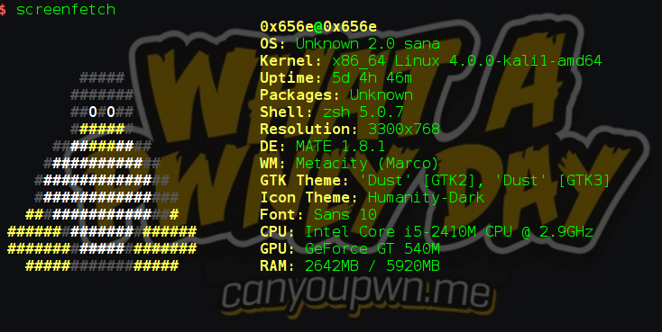

İlk defa pelican kullanıyorum.Arkamı yasladım github pages'e hadi hayrolsun. Blogumda Python,offensive ve defensive security konularına ayrıca farklı ilgimi çeken şeylerden de bahsedebilirim.Artık yazılarımı markdown ile yazıyorum.Bu gayet hoş bir deneyim.
Ben kimim ?
0x6 on Twitter
0x6 on Facebook
Şuan aktif olarak bir Canyoupwn.me üyesiyim.
Neler kullanırım neler yaparım ?
Python kodu yazarken ide olarak PyCharm PRO kullanıyorum.Hızlı işlemlerde nano işime yetiyor.Biraz daha profesyonel birşey istersem bu yazıyı yazarken kullandığım editör Atom kullanıyorum.
İşletim sistemi olarak genelde debian based sistemleri kullanmakla birlikte 5-6 aydır localde Kali kullanıyorum.Kali localde kullanmak için biraz sorunlu bir distroda olsa şuanlık idare edebiliyoruz.( Damn it kernel ! )
def selamla(x)
print(x)
selamla("Hay")
